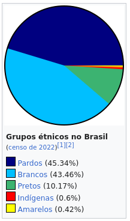

4 DIVERSIDADE E INCLUSÃO NA SOCIEDADE
Conceitos Fundamentais de Diversidade e Inclusão:
- Diversidade: Variedade de características entre indivíduos, incluindo raça, gênero, orientação sexual, habilidades, entre outros.
- Inclusão: Promoção de ambientes e práticas que valorizam e incorporam a diversidade, garantindo a participação de todos.
Desafios e Benefícios da Diversidade:
- Desafios: Estereótipos, preconceitos e discriminação.
- Benefícios: Criatividade, inovação e representatividade.
Políticas Públicas de Promoção da Diversidade e Inclusão:
- Ações Afirmativas: Medidas para corrigir desigualdades históricas, como cotas para minorias em instituições de ensino e trabalho.
- Educação Inclusiva: Garantia de acesso à educação para todos, independentemente de suas características.
Papel do Setor Público na Promoção da Diversidade e Inclusão:
- Legislação Antidiscriminatória: Estabelecimento de leis que proíbem discriminação em diversas áreas.
- Programas de Capacitação: Treinamentos para conscientizar e sensibilizar os servidores sobre a importância da diversidade.
A Importância da Diversidade e Inclusão no Ambiente de Trabalho:
- Ambiente Produtivo: Diversidade contribui para a criação de ambientes mais inovadores e produtivos.
- Bem-Estar dos Funcionários: Inclusão promove um ambiente de trabalho saudável e acolhedor.
- Imagem Institucional: Organizações que valorizam a diversidade têm uma imagem mais positiva.
Inclusão de Pessoas com Deficiência:
- Lei de Cotas: Estabelece percentuais de contratação de pessoas com deficiência nas empresas.
- Acessibilidade: Garantia de que espaços e serviços sejam acessíveis a todos, independente de suas limitações.
Educação e Conscientização para a Diversidade:
- Campanhas de Sensibilização: Iniciativas para conscientizar a sociedade sobre a importância da diversidade.
- Educação para a Tolerância: Promoção de valores que respeitem as diferenças.
4.1 Diversidade de sexo, gênero e sexualidade; diversidade étnico-racial; diversidade cultural.
Diversidade de Sexo, Gênero e Sexualidade:
- Sexo: Refere-se às características biológicas que distinguem homens e mulheres.
- Gênero: Construção social e cultural dos papéis e comportamentos associados a homens e mulheres.
- Sexualidade: Orientação afetiva e sexual de cada indivíduo.
Diversidade Étnico-Racial:
- Etnia: Compreende características culturais, linguísticas e históricas que identificam um grupo.
- Raça: Conceito social que categoriza as pessoas com base em características físicas, como cor da pele.
- Diversidade Racial: Reconhecimento e valorização das diferentes raças e etnias.

Diversidade Cultural:
- Cultura: Conjunto de valores, tradições, crenças e práticas compartilhadas por uma comunidade.
- Diversidade Cultural: Respeito e valorização das diferentes manifestações culturais presentes em uma sociedade.
Importância da Abordagem da Diversidade:
- Promoção da Igualdade: Reconhecimento e combate às desigualdades baseadas em características individuais.
- Inclusão Social: Criação de ambientes acolhedores para todos, independentemente de suas características.
- Combate ao Preconceito: Desconstrução de estereótipos e preconceitos relacionados a sexo, gênero, raça e cultura.
- Enriquecimento Social: Aproveitamento das diferentes perspectivas e experiências para o benefício de toda a sociedade.
Desafios a serem Superados:
- Discriminação: Combate à discriminação com base em características individuais.
- Estereótipos: Desconstrução de estereótipos que perpetuam preconceitos.
- Acesso Equitativo: Garantia de oportunidades iguais para todos, independentemente de suas características.
Políticas Públicas e Iniciativas:
- Leis Antidiscriminatórias: Estabelecimento de leis que proíbem a discriminação com base em características individuais.
- Campanhas de Conscientização: Iniciativas para promover a conscientização sobre a importância da diversidade.
- Programas de Inclusão: Ações governamentais e empresariais para garantir a inclusão de todos os grupos na sociedade.
4.2 Desafios sociopolíticos da inclusão de grupos vulnerabilizados: crianças e adolescentes; idosos; LGBTQIA+; pessoas com deficiências; pessoas em situação de rua, povos indígenas, comunidades quilombolas e demais minorias sociais.
Crianças e Adolescentes:
- Desafios: Vulnerabilidade a abusos, falta de acesso à educação e saúde adequada, exploração infantil.
- Políticas Necessárias: Garantia de direitos, proteção contra abusos, acesso a educação de qualidade.
Idosos:
- Desafios: Isolamento social, discriminação, falta de assistência adequada.
- Políticas Necessárias: Promoção da saúde na terceira idade, combate ao preconceito, políticas de inclusão social.
LGBTQIA+:
- Desafios: Discriminação, violência, falta de reconhecimento de direitos.
- Políticas Necessárias: Legislação antidiscriminatória, promoção da igualdade, conscientização social.
Pessoas com Deficiências:
- Desafios: Barreiras de acessibilidade, discriminação, falta de oportunidades.
- Políticas Necessárias: Acessibilidade universal, inclusão educacional e profissional, combate ao preconceito.
Pessoas em Situação de Rua:
Desafios: Exclusão social, falta de moradia, acesso limitado a serviços básicos.
Políticas Necessárias: Programas de acolhimento, assistência social, políticas habitacionais.
Povos Indígenas:
Desafios: Perda de território, discriminação, preservação da cultura.
Políticas Necessárias: Respeito aos direitos territoriais, preservação cultural, inclusão social.
Comunidades Quilombolas:
Desafios: Discriminação, acesso limitado a serviços públicos.
Políticas Necessárias: Reconhecimento dos territórios quilombolas, promoção da igualdade.
Demais Minorias Sociais:
Desafios: Discriminação, falta de representatividade, acesso limitado a oportunidades.
Políticas Necessárias: Promoção da representatividade, igualdade de oportunidades, combate à discriminação.
Abordagem Integrada:
Interseccionalidade: Reconhecimento da multiplicidade de identidades e desafios enfrentados por indivíduos pertencentes a múltiplos grupos de vulnerabilidade.
Participação Social: Inclusão das comunidades afetadas nas decisões e políticas que as impactam.